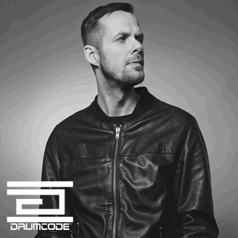

Drumcode Total @ Berghain Panorama Bar (09/11/13)

Swedish techno icon Adam Beyer and his Drumcode label have been plying their craft for close to 20 years, though in 2013 their combined success reflects the worldwide interest in techno itself - which just seems to be getting stronger and stronger. The label enjoyed a massive month in October, with Beyer playing nothing but Drumcode branded events, including a particularly spectacular party for Awakenings at the tail end of Amsterdam Dance Event (ADE). Last Saturday night in Berlin though, the label returned to host a party at Berghain; arguably one of the greatest locations for techno anywhere in the world.
In the true style of the refurbished power station, which shares such a strong link with the history of the city’s techno scene, while the party might have begun at midnight on Saturday, festivities would continue all the way through to Monday morning. A fair few of Drumcode’s key performers were scheduled for sets during the day on Sunday; while many took this as an opportunity to party all the way through, for others it was an excuse to enjoy a Sunday brunch, and then head to the club at 10am. While it’s always a sight to leap into the fray when the party has already been in full swing for an entire evening, a Sunday daytime adventure to Berghain is still a premium option for anyone wishing to enjoy the club’s musical delights in full.
The upstairs Panorama Bar was the first destination, with Adam Beyer beginning what would be a six-hour back-to-back set with his classy partner-in-crime Ida Engberg. It was a rare opportunity to catch Beyer performing in a different setting, and really giving his versatility as a DJ a proper workout. Walking into the throbbing grooves of M.A.N.D.Y’s mix of Fabio Giannelli’s Maintain set the tone nicely for what would several hours of very tough tech house, with Beyer cutting a towering figure alongside the quite petite Engberg.
There’s a special vibe that builds in the Panorama Bar on Sunday afternoon, hot and steamy and even bordering on the sexual as the crowd heaves together as one, the limited sunlight that reaches Berlin during November creeping through the shuttered windows. Beyer and Engberg made the most of the energy, with a set that eventually moved beyond the slamming grooves into a more eclectic selection of house music; crowdpleasers like Solomun’s mix of Tiga’s All Night Dancing, some melodic Innervisions style selections, and even the occasional anthem like Ten Walls Gotham; the cohesiveness sacrificed somewhat for diversity in these latter hours.
It was on the main floor of Berghain though where Beyer was allowed to express the true spirit of techno. Arguably, it’s techno in its most pure and most uncompromising form anywhere in the world. Like the Panorama Bar upstairs, the main floor boasts a rather unique vibe on Sunday afternoon as the hedonism peaks. Leather-clad partygoers were in full force, reflecting its status as an iconic gay club; though you’ll find all types on the Berghain dancefloor.
{kind=link}

He’d been warmed up prior by a suitably rolling and percussive set from Joseph Capriati, though when Beyer slammed in his first kickdrum over the floor’s thundering soundsystem at 3pm, it was clear he was taking no prisoners. For the fans of the incredible versatility that Beyer shows via all the live sets made available through his Drumcode Radio show, the stripped-back approach might have felt even a tad limited; particularly compared to his set at Awakenings in Amsterdam several weeks ago, where he built a deeper vibe earlier in the evening.
Technically though, it was a tour de force of unbridled intensity, and he still took his 5-hour set in plenty of unexpected, deeper directions; before inevitably thundering back in with a massive kick that would rattle you to your very core. While he might have begun Sunday playing house music, his later performance was a reminder of the purist mentality from which Beyer originally came.
And naturally, Drumcode and Berghain coming together was always going to deliver a win.